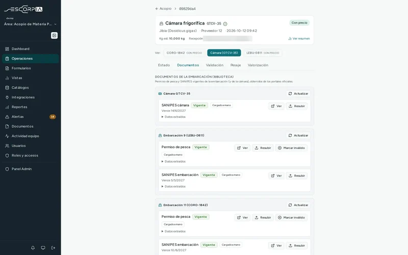

01Platforms and SaaS · 2024 – present
Escorpia Traza: Multi-tenant ERP and traceability for agro-export
SaaS platform covering intake, production, warehouse, foreign trade and e-invoicing. A web panel, an offline mobile app and WhatsApp bots work on the same backend.
Every piece of data is entered once and seen by the area that needs it, from the dock to departure; the whole infrastructure costs ~USD 83/month.
See Escorpia Traza on escorpia.com
Problem → solution → saving
Raw-material arrivals

- Problem
- Arrivals were announced on WhatsApp among voice notes and photos, and weights went into a notebook to be retyped into Excel; data got lost or duplicated.
- Solution
- A WhatsApp bot logs each arrival from text or voice, AI extracts the data from intake documents and scale weights sync with the arrival.
- Saving
- Nothing is retyped at the end of the shift, and the bot replies within seconds with the updated dashboard.
Production and packing list

- Problem
- Production was recorded and organized in heavy Excel files, and the packing list was put together by hand.
- Solution
- Batches with a traceability code, daily reports and a batch kardex; the packing list is generated automatically by picking batches from stock.
- Saving
- No more heavy Excel files: the packing list comes from stock, and shrinkage matches the plant's Excel (457 waste guides imported with zero rejections).
Warehouse and traceability

- Problem
- Stock was scattered: goods recorded as shipped that never left, or the other way round.
- Solution
- Consolidated stock with a kardex and stock reconciliation; production and departure are sealed as events that cannot be edited or deleted.
- Saving
- Full traceability for every batch, from intake to departure, with no lost stock and no unrecorded dispatches.
Quality and cold chain

- Problem
- Quality and cold-chain paperwork was kept by hand, and its documents took hours.
- Solution
- Every quality and cold-chain check is recorded; the sampling report is built on the phone, with photos, and its PDF comes from the data.
- Saving
- Documents that used to take hours are generated from data already recorded.
Foreign trade: automatic documents

- Problem
- Proformas lived in Excel rows with macros only one person understood, and Annex 01 was copied by hand, field by field.
- Solution
- Proforma, Annex 01, packing list and a draft certificate of origin are generated as PDFs from the data, in a file that holds 25+ document types.
- Saving
- Manual copying of documents is gone; 240 historical proformas (~USD 49.9M) were loaded into the system.
Notifications across areas
- Problem
- The status of each shipment was asked for by email, and every question opened a new thread.
- Solution
- When a document is generated, the areas involved are notified instantly, with alerts and dashboards for each area.
- Saving
- Every area sees the live status without asking for reports or opening email threads.
Shipment scheduling
- Problem
- Tracking each shipment's dates and prices depended on scattered tools.
- Solution
- Shipment scheduling with containers, B/L, departure and a document checklist per shipment.
- Saving
- Dates and prices for every shipment in one place, with what is missing visible at a glance.
Competitor analysis
- Problem
- There was no clear way to know where the company stood against its competitors.
- Solution
- Market analysis of competitors built from customs data.
- Saving
- Commercial decisions backed by data: the company's position against competitors, measured with customs data.
Technical highlights and stack
- Document engine with AI extraction, validation rules and a human-review traffic light; offline-first mobile app with an SQLite queue.
- Full foreign-trade area: proformas, containers, automatic packing proposals, a Kanban board and a historical load of 240 proformas (~USD 49.9M).
- Production with batch kardex, GS1 traceability and shrinkage reconciled against the plant's Excel (457 waste guides imported with zero rejections).
- SUNAT e-invoicing (invoices, receipts, credit/debit notes and dispatch guides) through a decoupled adapter.
- WhatsApp bots that log arrivals and issue proformas from text or voice notes, in production since August 2026.
- Release gate with 13,223 tests, Prometheus and Grafana observability, and infrastructure cut to ~USD 83/month.
Stack
- NestJS
- Fastify
- PostgreSQL 17
- Drizzle
- Redis
- BullMQ
- Next.js 16
- React 19
- Expo
- n8n
- Gemini
- Whisper
- Docker
- GitHub Actions
- Prometheus
- Grafana